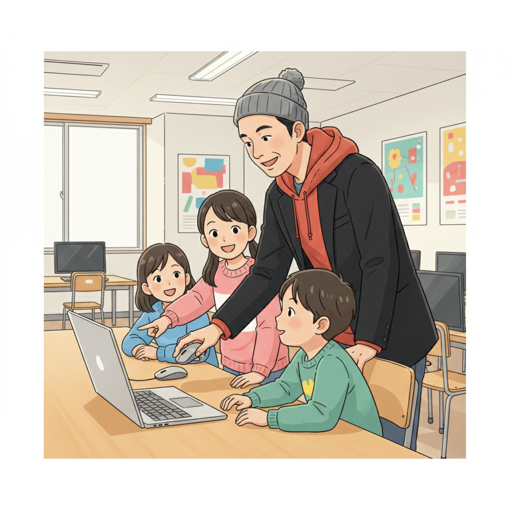
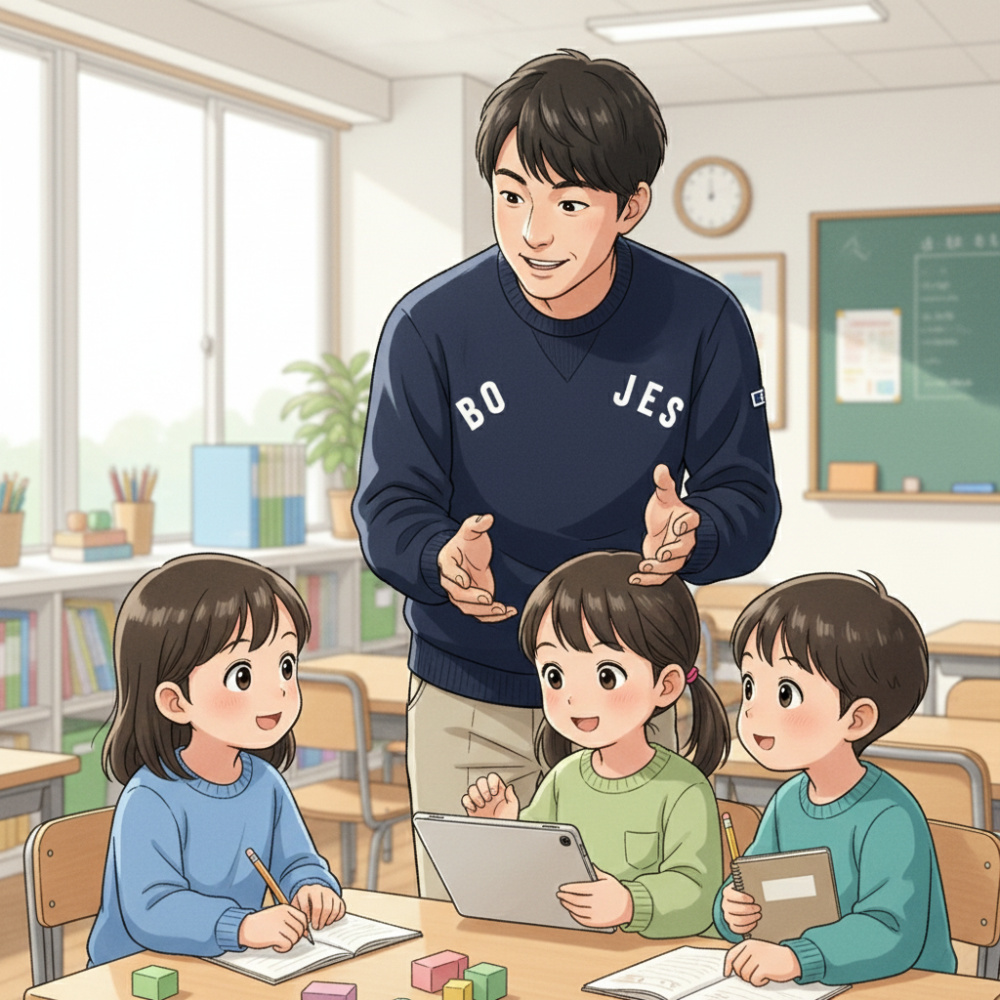

「苦手」を「得意」に変える！AI・ICT教育の可能性（高崎先生）

皆さん、こんにちは！if塾塾頭の高崎です。私たちは、発達特性を持つお子さんたちが秘めている可能性を、AIやICTの力を借りて開花させることを目指しています。多くの子が、学校の授業や集団行動に馴染めず、「自分はダメだ」と感じてしまうかもしれません。しかし、それは決して才能がないわけではありません。むしろ、他の人とは違う視点や、並外れた集中力を持っていることが多いのです。
AIやICTは、そんな彼らの特性を活かすための強力なツールになります。例えば、プログラミングは、論理的思考力や問題解決能力を養うのに最適です。また、ChatGPTのようなAIツールは、文章作成や情報収集をサポートし、学習のハードルを下げてくれます。if塾では、一人ひとりの興味やレベルに合わせて、AI・ICT教材をカスタマイズし、無理なく楽しく学べる環境を提供しています。
大事なのは、小さな成功体験を積み重ねること。最初は簡単なコードを書くことから始め、徐々に難しい課題に挑戦していく。その過程で、自分の成長を実感し、自信をつけていく。それが、私たちが目指す教育です。
ゲーム好きからプログラマーへ！情熱を力に変えた井上CTOの物語（井上CTO、高崎先生）
if塾のCTOを務める井上陽斗です。僕は、高校生の時に高崎先生と出会い、プログラミングの世界に足を踏み入れました。小さい頃からゲームが好きで、いつも熱中していました。でも、学校の勉強は苦手で、成績も良くありませんでした。そんな僕に、高崎先生は「ゲームへの情熱をプログラミングに活かせる」と教えてくれたんです。
最初は簡単なゲームを作ることから始めました。最初はうまくいかないことばかりでしたが、先生の丁寧な指導と、何よりも自分の好きなことだったので、諦めずに続けることができました。プログラミングはまるでゲームのようでした。試行錯誤を繰り返すうちに、どんどんスキルが上達していきました。そして、いつの間にか、自分の作ったゲームが多くの人に遊んでもらえるようになったんです。
僕のような経験を通して、発達特性を持つ人が、AI・ICTスキルを身につけることで、自分の才能を開花させることができると信じています。if塾では、僕自身の経験を活かし、子どもたちが楽しくプログラミングを学べるようにサポートしています。
高崎先生：井上君は、その集中力と粘り強さで、あっという間にプログラミングスキルを習得しました。彼の作ったゲームは、if塾の生徒たちにも大人気です。
特別支援学級から国立大学へ！山﨑塾長の挑戦と成長（山﨑塾長、高崎先生）

皆さん、こんにちは。if塾塾長の山﨑琢己です。僕は、ADHDとASDの診断を受けており、中学時代は特別支援学級に通っていました。学校の勉強についていけず、周りの友達ともうまくコミュニケーションが取れませんでした。そんな僕を変えたのは、高校で出会った高崎先生でした。
先生は、僕の特性を理解し、無理強いすることなく、僕のペースに合わせて教えてくれました。先生との出会いがきっかけで、僕は自分の興味のある分野を見つけ、それを深く追求することができました。そして、高校卒業後、国立大学に進学することができました。
今、if塾で塾長として、後輩たちのサポートをしています。僕自身の経験から、発達特性を持つ子どもたちが抱える悩みや苦しみはよくわかります。だからこそ、一人ひとりに寄り添い、その才能を最大限に引き出せるように、全力でサポートしたいと思っています。
高崎先生：山﨑君は、持ち前の明るさと優しさで、生徒たちの心のケアをしています。彼の存在は、if塾にとってなくてはならないものです。
未来への扉を開こう！if塾で自分だけの才能を見つけよう（高崎先生）
if塾では、AI・ICT教育を通じて、子どもたちが自分自身の才能を発見し、それを伸ばしていくためのサポートをしています。プログラミング、AIツール活用、デジタルアートなど、様々な分野に挑戦できます。Y君のように、eスポーツの才能を活かしてプロの道を目指すことも可能です。
大切なのは、「自分には何ができるんだろう？」と諦めずに、一歩踏み出してみること。if塾は、そんなあなたを全力で応援します。私たちと一緒に、未来への扉を開きましょう！
if塾は、秋田のプログラミング教室として、ASDやADHDのお子様のICTスキル向上と才能開花を支援しています。ぜひ一度、if塾にご連絡ください。お待ちしています！